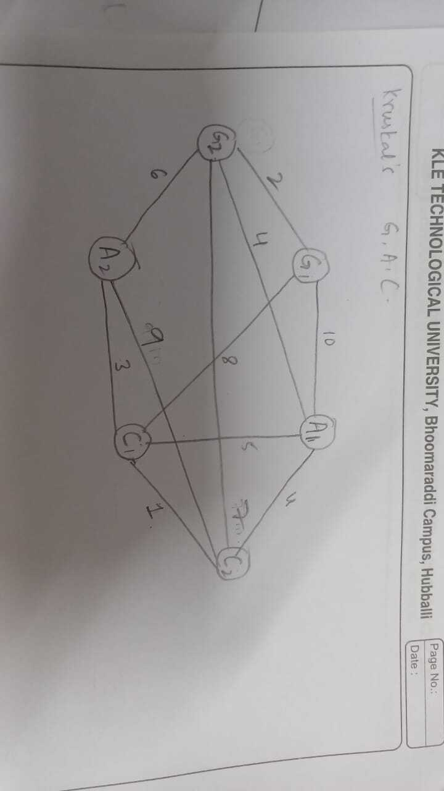

Target: 11.6
Indicator: 11.6.2
In Shyamora, we want to promote sustainable growth in our industrial sector by optimizing our supply chain. Our goal is to connect green industrial zones, agro-processing units, and local cottage industries. This will help us reduce transportation costs, lower pollution, and make better use of resources, creating a healthier environment for everyone.
| Component | Quantity | Description |
|---|---|---|
| Green Industrial Zones | 2 | Areas focused on eco-friendly manufacturing and renewable energy solutions |
| Agro-Processing Units | 2 | Facilities for processing local food and products |
| Cottage Industry Hubs | 2 | Centers for promoting crafts and traditional handloom work | 
We will use Kruskal's Algorithm to optimize our supply chain. This algorithm is efficient, with a time complexity of O(E log E), making it suitable for our needs. It helps us find the lowest cost connections between different parts of our supply chain. Here, "costs" include transportation expenses based on distances between components (measured in kilometers), operational costs, and environmental impacts. This strategy will improve resource use and support our commitment to sustainable growth, making Shyamora a better place to live.
For more details, you can access the code for our supply chain optimization efforts HERE.
Target: 11.4
Indicator: 11.4.1
In the context of our city Shyamora, small businesses like the pickle industry face issues of overordering and overstocking. Here, we reference EOQ (Economic Order Quantity) to help balance the amount of materials to be ordered, reducing costs and ensuring optimal inventory levels. This helps to tackle overordering and avoid wastage, leading to cost savings and better inventory control. The goal is to find the order quantity that minimizes the total cost of inventory.
The time complexity of the EOQ calculation is O(1), or constant time, because the EOQ formula involves only basic arithmetic operations (multiplication, division, and square root) and no loops or recursive calls. HERE.